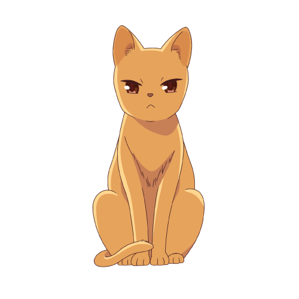

|
Age: 16-18 Hair color: Orange Eye color: Burnt Orange He is the third main protagonist. He is the Cat in the chinese zodiac. But he is not technically part of the chinese zodiac. He is actually the 13th member. Since he is not technically part of the zodiac all of the other zodiac and family members treat him badly. He is the most troubled out of all the other members. He is really into karate. He has anger issues. He is just trying to live another day without being put into isolation, because some of the members think he is a monster and should be put in isolation. |
|
| The Cat  |